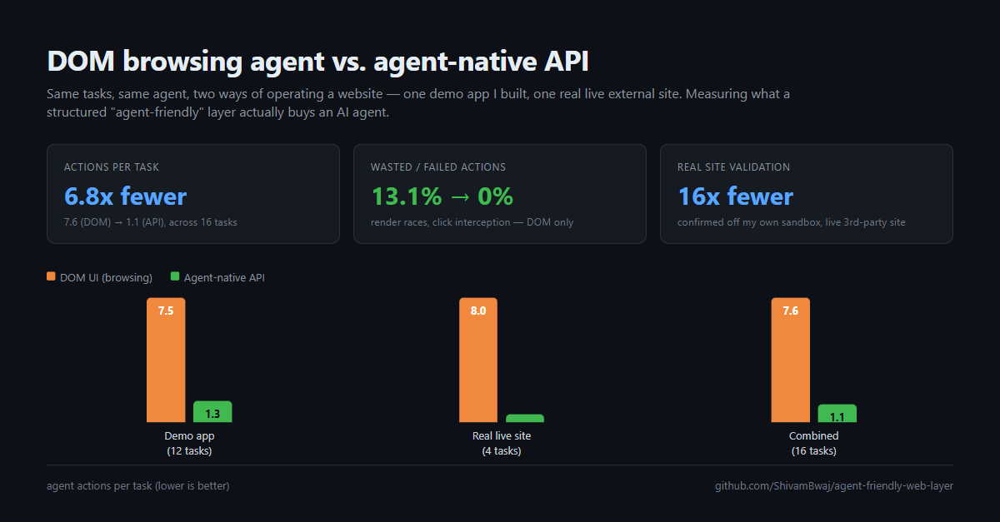
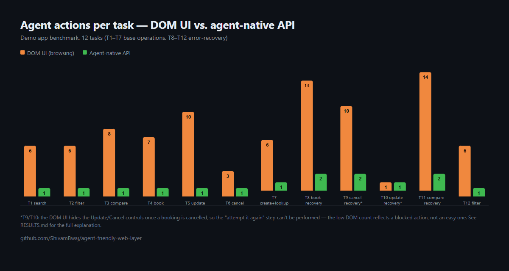

// benchmark log — not a demo
Does a structured API actually
help an AI agent more than a browser?
I built one app with two interfaces, ran 16 tasks through both, and measured what happened — including the parts that didn't go the way I expected.
01 the setup
A classic server-rendered, multi-page app. Forms, links, real page navigations. No client-side JS. This is what a browsing agent — screenshot, accessibility tree, click, type — has to work with.
A small "agent-friendly web layer": a JSON manifest describing every capability — search, filter, compare, book, update, cancel — each a single structured HTTP call.
Same backend, same data, both interfaces read and write the same store — so any measured difference comes from the interface, not from inconsistent business logic. I acted as the agent myself in both conditions, holding the reasoning constant so the interface is the only variable.
02 the numbers

| run | tasks | DOM actions | API actions | actions / task | reduction |
|---|---|---|---|---|---|
| demo app | 12 | 90 | 16 | 7.5 → 1.3 | 5.6x |
| real external site | 4 | 32 | 2 | 8.0 → 0.5 | 16x |
| combined | 16 | 122 | 18 | 7.6 → 1.1 | ~6.8x |

03 what actually drove it
- Discovery cost. The DOM agent has to find the right form every time. The API agent reads one manifest once and knows every operation for the rest of the session.
- Implicit vs. explicit state. A DOM confirmation page shows a booking id as text. An API response returns it as a field the agent can hold onto — cutting out a whole lookup round-trip on every follow-up action.
- Render-timing races are a DOM-only failure mode. A page read returning empty before it finished drawing, a click landing before the tab rendered — structurally impossible over JSON. There's no such thing as a half-rendered API response.
04 the two things I didn't expect
The DOM UI sometimes prevents an agent from even trying
Once a booking is cancelled, its Update/Cancel buttons stop rendering — confirmed with a zero-match search on the page. "Cancel it a second time" isn't a DOM-agent failure, it's an action the interface never offers. The API has no such guard: it accepts the request and returns a clean, structured {"error": "already cancelled"}. Same rule, two opposite strategies — preventive for a human, reactive-and-diagnosable for an agent.
My own API had a validation gap the UI didn't
The DOM route checks for at least two items before comparing. My hand-built API endpoint doesn't — it returns 200 OK on an incomplete comparison with no error at all. I found this live, during the benchmark, and left it in rather than patching it after the fact. Shared backend logic does not give you shared input validation for free.
05 then I left the sandbox
Everything above is on an app I built myself — the obvious objection is "of course it favors your API, you control both sides." So I ran the same methodology against a real, live, third-party site built for automation practice — no login, no payment, using its own published public API.
Two things came out of that run that a sandboxed demo app structurally could not have produced:
- A live third-party ad overlay silently intercepted two clicks mid-task — invisible to the accessibility tree, only caught by taking a screenshot.
- One cached API response answered three of four tasks, because it carried metadata the rendered page never showed as visible text — a browsing agent needed three separate page loads for what one JSON response already contained.
read the whole thing
Full methodology, raw per-task logs, and the honest limitations section (including exactly where this benchmark is noisy) are in the repo.
github.com/ShivamBwaj/agent-friendly-web-layer ↗